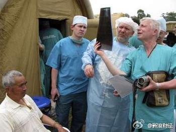

塞尚是大器晚成的艺术家——十几岁就开始学绘画，但到三十多岁画的画还被认为没有入门。但他一直怀揣信念，在艺术的道路坚持几十年，漂在巴黎不断努力，终于在四十多岁开始崭露头角，到五六十岁才慢慢成为优秀的画家。塞尚几十年的坚持背后是什么呢？是他的银行家父亲。（看网页链接 ）
公费医疗是社会主义共产主义的东西，资本主义美国可不搞！宁要资本主义的草，不要社会主义的苗！//@王风风风9: 报复前一阵天朝的言论而斗气么？这可不行啊，治国又不是过家家。//@幸福的哈里森: 转发微博@新浪财经:【俄罗斯宣布终结付费医疗制度 公民看病永久免费】俄罗斯卫生部长日前宣布，保证俄罗斯公民将永远在俄罗斯联邦内能够免费享受医疗服务，而且保证医疗服务项目每年都会增加。这意味着，俄公民在公费医疗上享受同等待遇，不会因没钱被医院拒之门外。网页链接 更多精彩：网页链接 

 网页链接 ）
网页链接 ）